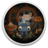

 Teleglitch: Die More Edition
Detalles
 |
|
| Tiempo de juego | No Jugado |
| Última actividad | Nunca |
| Añadido | 23/07/2021 17:22:28 |
| Modificado | Nunca |
| Estado de finalización | Not Played |
| Librería | Gog |
| Fuente | GOG |
| Plataforma | PC (Windows) |
| Fecha de lanzamiento | 22/07/2013 |
| Puntuación de la Comunidad | 63 |
| Puntuación de la Crítica | 90 |
| Puntuación de usuario | |
| Género | Action Roguelike Shooter |
| Desarrollador | Test3 Projects |
| Editor | Paradox Interactive |
| Característica | Achievements Cloud Saves Controller support Single Player |
| Enlaces | Store |
| Tag | |
Descripción
This game includes Teleglitch: Die More Edition and Teleglitch: Guns and Tunes DLC
In a cold, dark future dominated by mega-corporations, a small lonely planet on the edge of habitable space is the site of a shadowy research facility specializing in necrotic tissue reactivation. You are a scientist who has suddenly awoken to the realization that you are the lone survivor. The rest of the facility’s personnel have all been killed – micro-chipped and reactivated as combatants by the facility’s central processing AI.
Teleglitch: Die More Edition is a roguelike top-down shooter with retro pixel graphics. Featuring procedurally generated maps that change with each play through, you will never experience the same facility twice. Clutch your gun, walk down the dark corridors and enter each new room hoping those last few rounds of ammunition will be enough. Feel the anxiety, the paranoia and the sheer terror of Teleglitch.
Key Features
- Over 20 types of enemies to combat
- More than 40 types of weapons and items
- 10 levels that radically change their structure every time you play
- 10+ hours of play time (it gets harder the further you get)
- Detailed database with full dossiers of each monster
- Scavenge random equipment to craft new and deadly gear like The Can Gun (empty can + nails + explosives)
- A sinister narrative filled with greedy military corporations covert experiments
- The risk of permanent death creates an atmosphere of fear and dread
The Die More Edition features:
- 5 bonus levels
- Additional items and weapons
- Upgraded and more deadly enemy AI
- Expanded dossiers and lore content
Music to kill by and the weapons to make it happen.
The Guns and Tunes DLC for Teleglitch: Die More Edition will grant players access to eight new starter weapons and utilities . A soundtrack of original music created by the Teleglitch developers deliver five haunting tracks that convey the constant tension of T3P’s chilling game world and complements the actual in-game ambient soundtrack.
NOTE: The soundtrack is standalone and can be downloaded as an extra goodie.
It does not provide in-game music.
Features:
- 8 new starter weapons and utilities to add to your arsenal
- 5 standalone music tracks that will enhance your Teleglitch experience
- A new option to randomize your weaponry at the start of the game